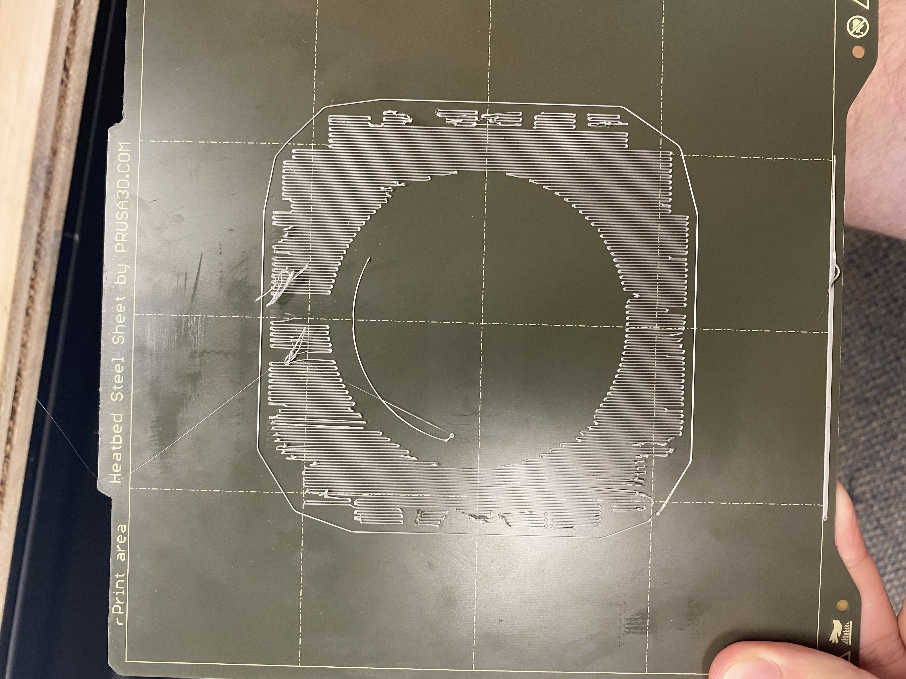
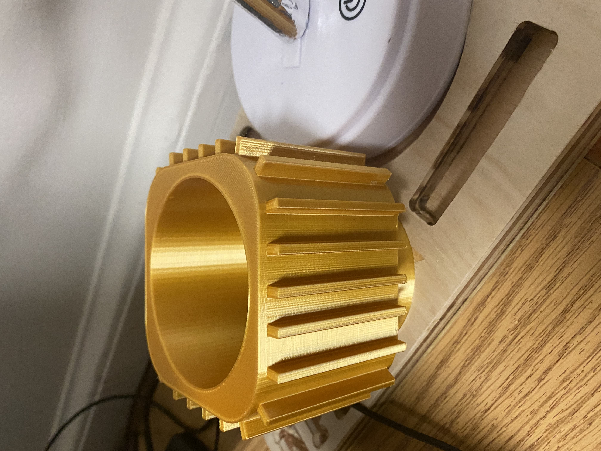
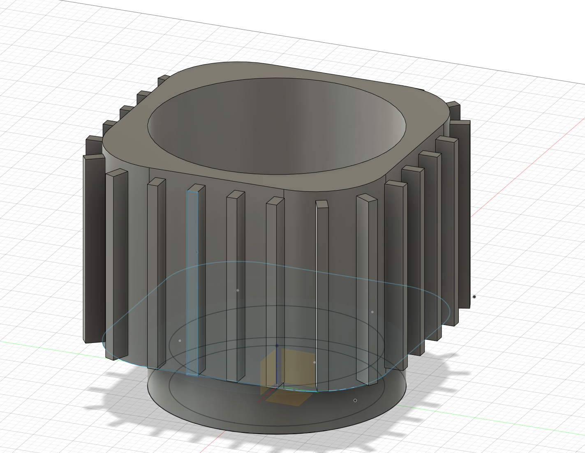
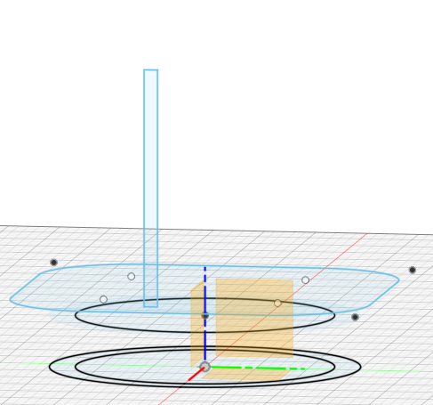

Intro
This week we where learning FDM Printing, or simply 3D printing with and FDM machine. FDM is a excretion based printing process that puts out PLA plastic in a patern level by level, creating the desired 3D object.
In the image above, you can see the beginings of my first atempt at a print, though this was a failed print as the PLA didnt stick to the platform. This was actualy one of 3 failed atempts, 3 machines 3 atempts and 2 days later we ended up with
This print was designed to be a vase, though I seem to be using it more as a pencil holder.
For the design portion of the project we used Fusion 360. I created 4 differnet sketches, from to to bottom we have our base that fits into the desk organizer we made last week, then we have the base of the cup itself, then the third sketch is to create the walls of the vase, and lastly we have the final block that is for the outside patern.
Once we have finished with out design in Fusion 360 we have to put the file into Prusa slicer, this is the program that comes with the printers. This program is what actualy creates the pathing for the gimble to follow. Both for each layer and for the routing of each layer. One of the other important things that prusa slicer can do is to add support. As i found out the hard way, you canot print in midair. Thus the program adds layers of PLA under your design overhangs. The suports are made much less dense pathing so they can be broken off later and leave your design fully intact. The last thing that Prusa slicer does is it allows you to change the print settings, like the line thickness and fill patern. These can efect your print time and print quality.